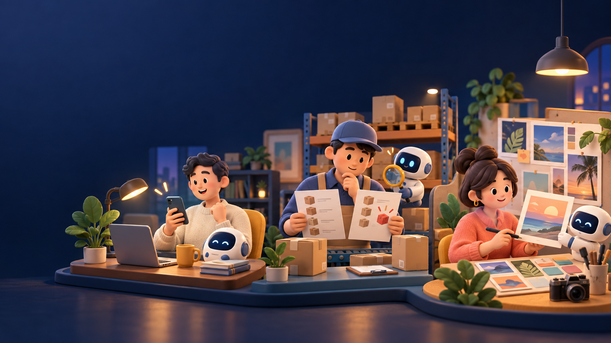

投影片維持學員上課時會看到的內容；每頁下方另附「設計用意」與「現場引導」，方便快速確認課程邏輯。整堂課以完成一次真實工作循環為驗收，不以聽懂名詞或立即建立全自動 Agent 為目標。
一件你每週都要做、又很花時間的事
一個工作上用得上的第一版成果
沒關係，今天就一起練。

這裡面，有沒有你每天都在忙的事？
先不用解決。記住你剛剛想到的那件事，等一下會拿它來練。
來源：McKinsey《The State of AI 2025》，1,993 位受訪者、105 個國家。原文為組織層級調查。
課前問卷共 36 份回覆；本圖使用單選題，因此可以用圓餅圖呈現。
不是背一句厲害的提示詞。先說你想做什麼，再從 AI 的回答看出還少了什麼。
讓它知道資料從哪裡來、給誰看、哪些不能自己猜，做法才會慢慢靠近你。
今天會用同一件工作，問一次、看一次、再修一次。
概念依 OpenAI Agents／Skills 與 Anthropic Agent Skills 官方文件整理。不同產品的功能名稱與做法會不同。
把關注的市場、客戶與商品來源整理成待確認清單
照約定欄位比對兩份資料，標出差異與缺漏
依品牌規則試做文案或圖片草稿，再由人員修改
回看這週做了什麼、卡在哪裡，下週先處理哪一件
今天先做出可以檢查的第一版。規則經過幾次修正後，才適合留給下一次使用。
這堂課不是背「完美提示詞」。我們會練的是：一來一往，把需求越問越清楚。
它從大量資料中學習怎麼接話，所以回得又快又順。
但它不知道我們公司的出貨規則，也不知道你主管在意什麼。
你不會對新人說「幫我整理一下」就走開。你會告訴他：這份給誰、他看完要做什麼、哪些事不准自己猜。
當你不知道怎麼說，它會先問你。當你答不出來，它會給選項。
你只要拿一件真的工作來回答。
一份可以直接分享、貼進對話的文字說明書
我每次要＿＿＿＿，最卡的是＿＿＿＿，
希望最後可以得到＿＿＿＿。
它會一次問一個問題，陪你把用途、資料和想要的結果慢慢講清楚。
不知道就說不知道。可以請它給兩個選項，也可以請它先做五行讓你看。
「這一段把尚未確認的事寫成結論了。請改成待確認，並保留原始資料。」
修完再問自己：如果現在要交給主管、同事或客人，我敢不敢送出去？
每天要注意的市場訊息、商品比較、選品資料整理。
兩份資料比對、找出差異、標出還需要人工確認的紀錄。
照品牌習慣做文案與圖片初稿，保留正確的商品資料。
講需求 → 看結果 → 找問題 → 補資料或追問 → 修成能用的成果
上列為代表情境，不表示每個部門只有這些用途。練習資料皆為教學示意。
今天先把一件工作做完。下一堂，就從大家這次卡住的地方繼續。
給執行長的確認重點：這堂課的設計不是完全避開專業名詞，而是調整專業內容出現的順序。前面先從夥伴熟悉的工作情境、課前問卷與實際卡點開始，讓大家先知道自己要解決什麼；有了情境之後，再介紹模型、幻覺、Prompt、Agent、Skill 與 MD。這些基礎名詞仍然需要認識，因為未來夥伴要搜尋教學、比較工具或進一步學習時，必須知道正確的詞，才找得到正確的資料。
課程設計方式：每個觀念都採用「日常問題、簡單比喻、必要名詞、現場操作」的順序。專業內容只講到足以使用的程度，不從定義與理論開始，也不要求背誦公式。整體維持約 30% 說明、70% 實作，並以完成一次真實工作循環作為驗收。
預計的引導方式：我會先用一句問題請夥伴分享，再揭示問卷與案例，讓大家自己看見共同卡點。實作時先讓大家照原本習慣問一次，留下第一版；接著貼入課堂提供的「需求釐清大腦」，讓 AI 一次反問一題。夥伴再從結果中指出哪裡不對、補資料或修正要求，最後完成一份可以繼續使用的成果。這樣大家不是照抄一條 Prompt，而是在互動中學會怎麼把需求越講越清楚。
第一堂的界線：Agent 與 Skill 先建立共同語言與後續想像，不承諾上完即可完成全自動流程或直接產出正式報告。部門自動化、排程與正式輸出，需要後續課程用真實工作逐步驗證。案例與畫面皆為教學示意，實作資料也會先移除個人與客戶敏感資訊。
可使用鍵盤左右鍵、手機左右滑動，或上方按鈕換頁